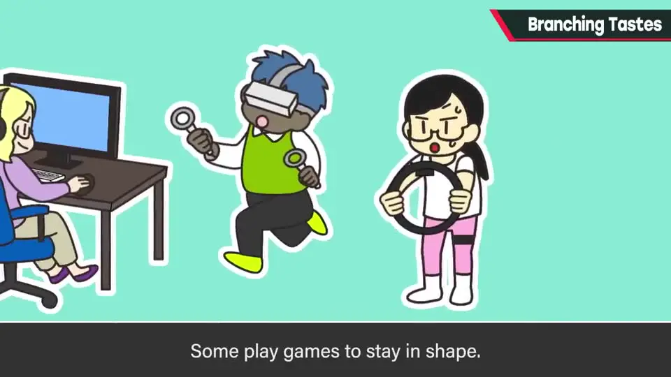
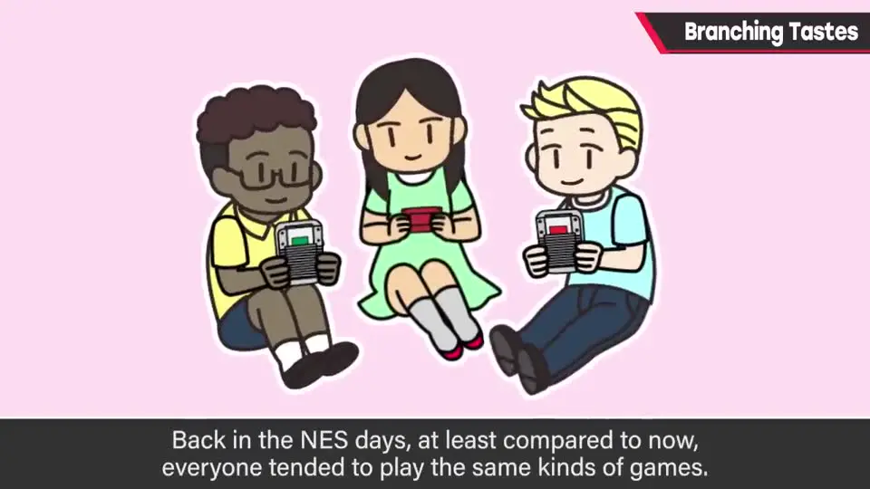
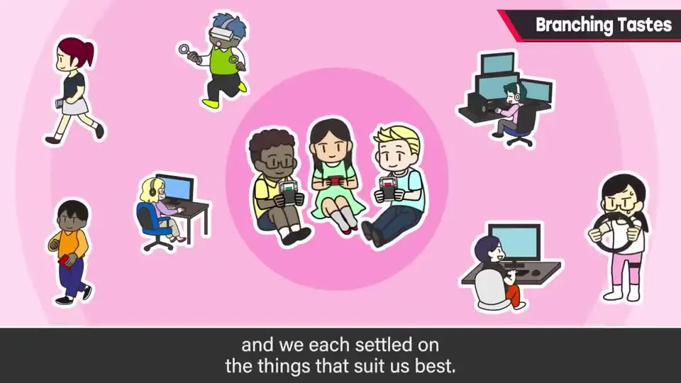
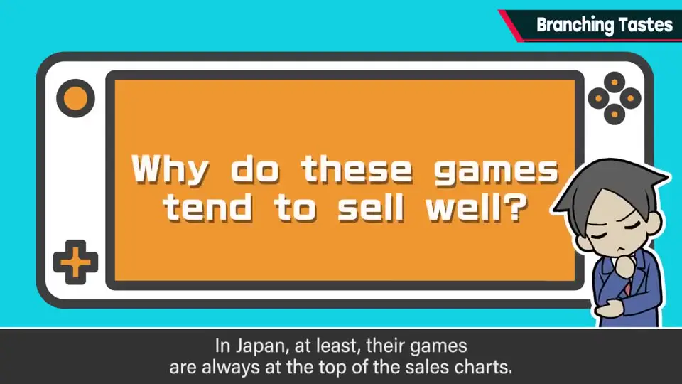
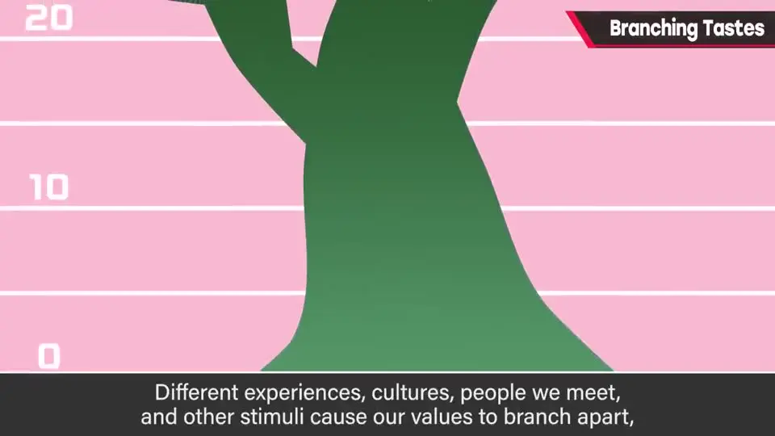
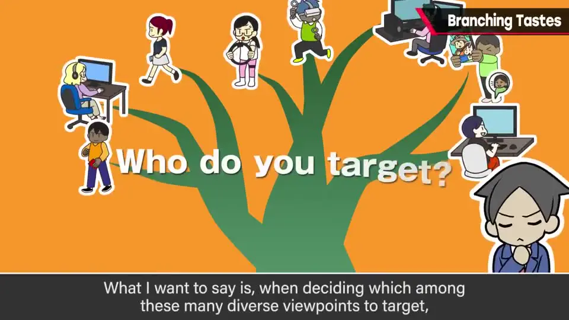
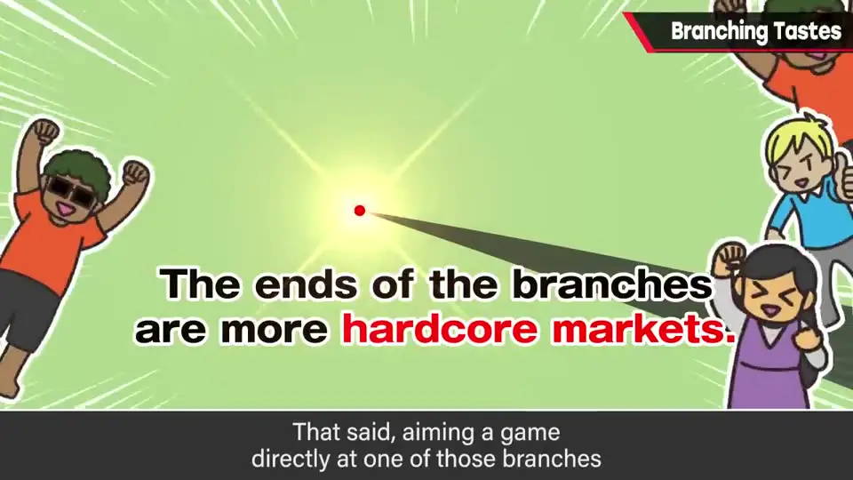

速览
玩游戏的人做的事千差万别：同样是「游戏玩家」，本质却各不相同。樱井用一棵树来比喻：人在成长中，因经历、文化背景、相遇等让价值观不断分岔，越往枝头越细；而分岔之前的树干（年轻层）市场最粗。他认为任天堂作品畅销的一大原因是在年轻层中大受欢迎。重点不在于解释任天堂为何畅销，而是：决定瞄准哪里时，不要只凭自己的好恶，而要俯瞰市场。枝头是更狂热的小众（niche）市场，也并非所有游戏都该瞄准树干——有意识地做目标定位才是关键。
1. 同样是「玩游戏」，做的事却千差万别 0:02
前提：想法有很多种。人本来就是多样的——但年轻时，这种差异或许没那么大。
把「玩游戏的人」统称起来，实际做的事也各不相同；以同样方式玩同一款游戏的人，在整体中应该是少数：
- 持续购买家用机实体版游戏的人
- 只玩某一款社交游戏（手游）的人
- 每晚在对战 FPS 里一较高下的人
- 在 VR 中沉浸于世界的人
- 为了保持健康而玩游戏的人
- 今天也在 MMORPG 里和伙伴见面的人
- 以 PC 为主、狂玩独立游戏的人
同样是游戏粉丝，本质却不同。



2. 任天堂作品为什么那么好卖？ 1:26
这期不是在讲往事。任天堂作品——尤其是销量靠前的——在全世界都卖得非常好，至少在日本总是霸占销量榜前列。为什么？
- 当然有品质高的因素；
- 但硬件上并非技术最尖端——现在的游戏机在表现和处理能力上都很强，这方面没有那么大的优势；
- 樱井认为，原因之一是在年轻层中大受欢迎。

3. 价值观之树：树干最粗 2:10
- 人在成长过程中价值观会多样化：因各自的经历、文化背景、相遇和契机，不断分岔。
- 分岔后的枝头自然越来越细；但分岔前的树干很粗。
- 可以把年轻层看作位于树干部分。在多数人走向多样化的过程中，尚未分岔阶段的市场最大。
- 而且那时经历过的东西，如果有符合时代的新产品，也许还能传承给下一代。

flowchart BT
T["树干：年轻层
尚未分岔 · 市场最粗"] --> B1["分岔：经历"] T --> B2["分岔：文化背景"] T --> B3["分岔：相遇与契机"] B1 --> N1["枝头：小众（niche）
但可能更狂热"] B2 --> N2["枝头：小众"] B3 --> N3["枝头：小众"]
尚未分岔 · 市场最粗"] --> B1["分岔：经历"] T --> B2["分岔：文化背景"] T --> B3["分岔：相遇与契机"] B1 --> N1["枝头：小众（niche）
但可能更狂热"] B2 --> N2["枝头：小众"] B3 --> N3["枝头：小众"]
4. 做游戏时，你瞄准哪里？ 2:53

本期决不是在讲任天堂为什么畅销——那还有更多理由。真正想说的是：
在不断扩散的价值观中，做游戏时要瞄准哪里，不应单纯凭自己的好恶，而应更俯瞰地去意识。
- 普适的作品、王道作品容易热卖，系列作也容易热卖——也许正是因为它们容易契合人们已形成的价值观。
- 枝头的市场可以说是小众（niche）市场。
- 但也有可能只有枝头的人才会狂热地喜爱，所以这不是说「大家都去瞄准树干」。
- 只要有这个意识，就能做目标定位。

自测题
1. 樱井用什么比喻说明玩家价值观的变化？年轻层位于哪里？
一棵树：人在成长中因经历、文化背景、相遇等让价值观不断分岔，越往枝头越细；年轻层位于尚未分岔、最粗的树干部分。 2:10
2. 樱井认为任天堂（尤其畅销作）卖得好的一大原因是什么？他说这期的重点是这个吗？
他认为一大原因是在年轻层中大受欢迎（而不是硬件技术最尖端）。但他强调本期并不是在解释任天堂为何畅销——原因还有很多。 2:00
3. 「枝头」的市场有什么特点？那是否应该所有游戏都瞄准树干？
枝头是小众（niche）市场，也可能是更狂热（hardcore）的市场，只有那里的人才能尽情享受。所以并不是说大家都该瞄准树干，而是要有意识地做目标定位。 3:35